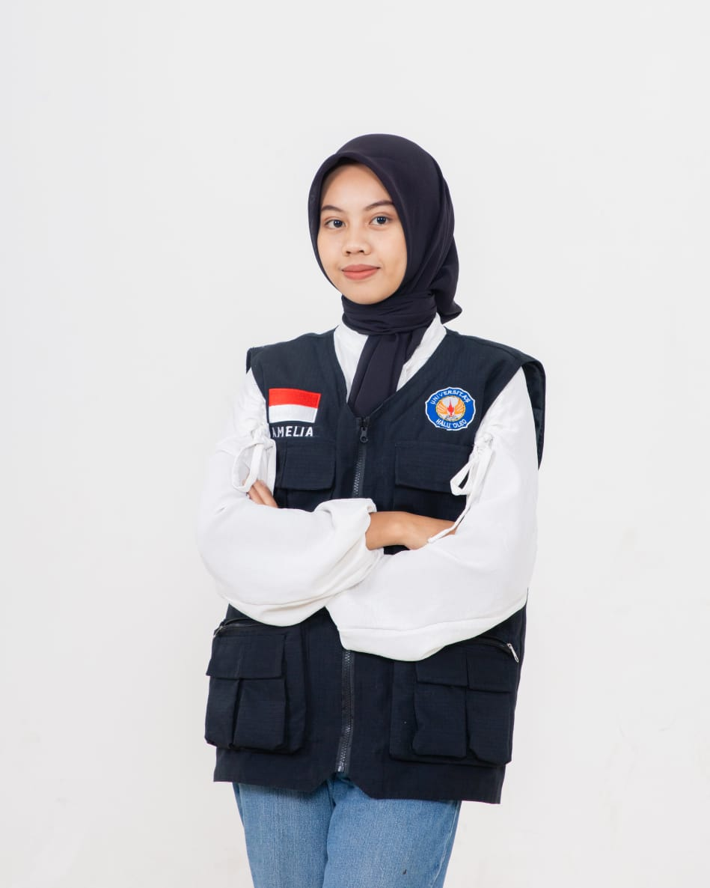

Resume Saya

Ringkasan
Lulusan S1 dari Universitas Haluoleo dengan spesialisasi bidang Administrasi Bisnis.
Senang belajar hal baru dan berorientasi pada detail serta memiliki aspirasi untuk
bekerja dibidang administrasi di industri keuangan, retail dan FMCG. Mampu
mengoperasikan Microsoft Office, memiliki jiwa orientasi pelayanan dan kerja sama tim
yang baik.
Pendidikan
Universitas Haluoleo (2020-2024)
- Mata Pelajaran Yang Relevan : Teknologi Dan Iformasi, Manajemen Sumber Daya Manusia
SMA Negeri 5 Kendari (2019-2020)
- Mata Pelajaran Yang Relevan : Teknologi Dan Iformasi, Ekonomi, Bahasa Inggris
Pengalaman Kerja
- PT Bank Syariah Indonesia KC Kendari A Silondae 1
- Agustus 2022- Desember 2022
- Tanggung Jawab
- Bertanggung jawab dalam proses pembukaan rekening baru untuk nasabah
perorangan dan bisnis.
- Mengikuti kunjungan nasabah prioritas untuk memahami kebutuhan dan
menawarkan solusi keuangan yang sesuai.
- Mengelola dokumen nasabah dengan akurat dan menjaga kerahasiaan informasi
yang bersifat pribadi.
Keterampilan
Hard Skill
- Menguasai Microsoft Office (Word,Excel,Powerpoint)
- Digital Editing (Convert PDF/Word/image,Menggabungkan PDF, ttd Online)
- Sistem Penyimpanan Berkas
Soft Skill
- Teliti,Gesit,Telaten
- Kemampuan Komunikasi Yang Baik
Penghargaan dan Sertifikat
Sertifikat Pelatihan Pada BPVP Kendari Bidang Teknologi dan Informasi Bidang Pemrograman WEB Tahun 2024
Sertifikat Magang Pada PT Bank Syariah Indonesia Bidang Branch Banking And Operator Tahun 2022
Halaman Lain
Instagram
© 2024 Amelia. Hak Cipta Dilindungi.